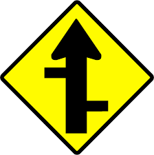
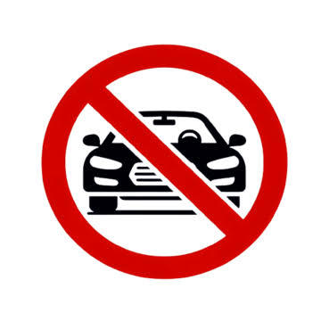
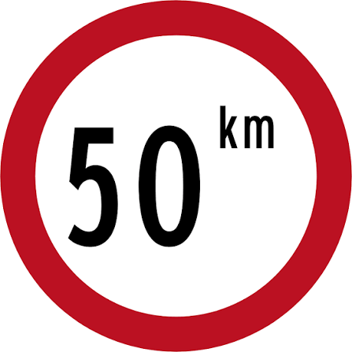
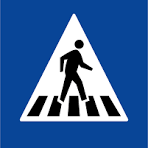
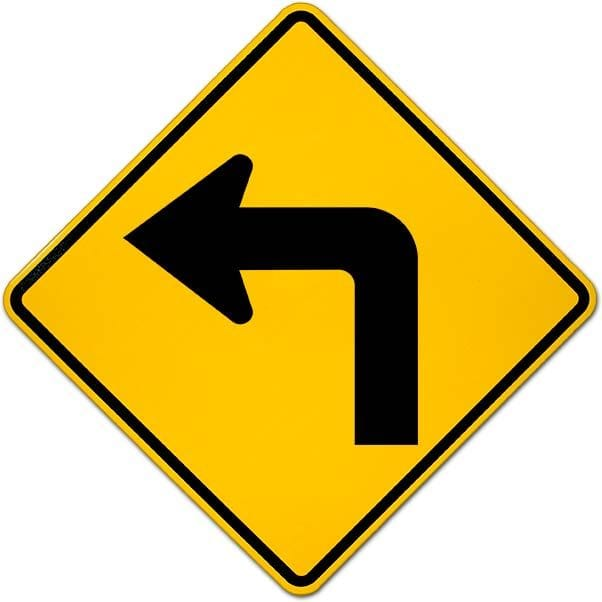
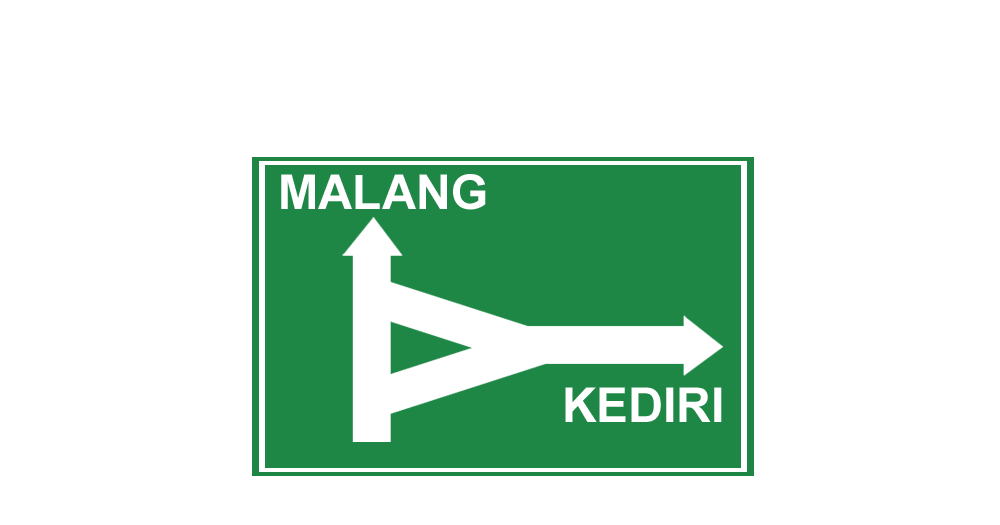

Pelajari 25+ rambu lalu lintas lewat kartu visual interaktif. Klik setiap rambu untuk mengetahui arti, bentuk, warna, dan fakta menariknya!
Di Indonesia, rambu lalu lintas dibagi ke dalam 4 kategori utama berdasarkan fungsinya.
Memberi peringatan adanya bahaya atau kondisi jalan yang memerlukan perhatian khusus.
7 rambuMelarang pengguna jalan melakukan tindakan atau gerakan tertentu demi keselamatan.
7 rambuMemerintahkan pengguna jalan untuk melakukan tindakan atau mematuhi aturan tertentu.
6 rambuMemberi petunjuk arah, informasi fasilitas, atau tempat yang berguna bagi pengguna jalan.
5 rambu





Segitiga = Peringatan, Lingkaran = Larangan/Perintah, Segi delapan = STOP, Persegi = Informasi.
Kuning = Hati-hati, Merah = Larangan/Bahaya, Biru = Perintah/Informasi, Hijau = Petunjuk Jalan.
Simbol di dalam rambu langsung menunjukkan arti — panah lurus = lurus, panah belok = belok.
Amati rambu saat perjalanan bersama orang tua. Setiap rambu nyata yang kamu temukan = hafal seumur hidup!